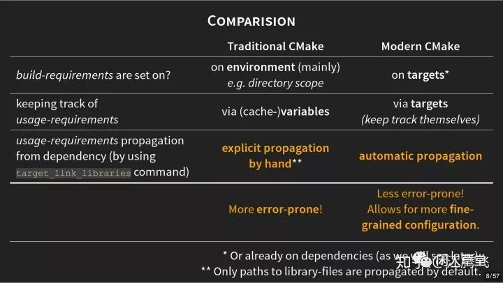

4. Target 和 属性¶
参考文章 Modern CMake 简介
现代化的CMake是围绕 Target 和 Property 来定义的，并且竭力避免出现变量variable的定义。Variable横行是典型CMake2.8时期的风格。现代版的CMake更像是在遵循OOP的规则，通过target来约束link、compile等相关属性的作用域。
如果把一个Target想象成一个对象（Object），会发现两者的组织方式非常相似, 前后CMake可以类比为C和C++。
因此建议围绕Target来写cmake, 去除之前全局命令的写法。
如果把一个Target想象成一个对象（Object），会发现两者的组织方式非常相似：
构造函数：
- add_executable()
- add_library()
成员函数：
- get_target_property()
- set_target_properties()
- get_property(TARGET)
- set_property(TARGET)
- target_compile_definitions()
- target_compile_features()
- target_compile_options()
- target_include_directories()
- target_link_libraries()
- target_sources()
成员变量
- Target properties（太多）
在Target中有两个概念非常重要：Build-Requirements 和 Usage-Requirements。这两个概念对于理解为什么现代CMake会如此设计提供了指导意义。
- Build-Requirements：包含了所有构建Target必须的材料。如源代码，include路径，预编译命令，链接依赖，编译/链接选项，编译/链接特性等。
- Usage-Requirements：包含了所有使用Target必须的材料。如源代码，include路径，预编译命令，链接依赖，编译/链接选项，编译/链接特性等。这些往往是当另一个Target需要使用当前target时，必须包含的依赖。
传统的CMake和现代化的CMake的主要区别（非语法层面）如下图所示。Traditioncal CMake在设置build-requirements和usage-requirements上都依赖手动输入命令，并且人工维持其作用域（变量的作用域以目录为单位）。而Modern CMake在设置上述requirement均以target为单位，所以在传递target属性到其依赖的下游链条中更自动也更智能。

在Moden CMake中新增了不少关键字，其中最常见的是PUBLIC、PRIVATE、INTERFACE。
PUBLIC PRIVATE INTERFACE¶
参数 INTERFACE，PUBLIC，和 PRIVATE 主要用于指定头文件搜索路径的范围，以便在构建过程中正确传递依赖关系。以下是这三个参数的区别：
- PRIVATE:
PRIVATE用于将指定的头文件目录添加到目标的私有头文件搜索路径中。- 这意味着只有当前目标能够访问这些头文件目录，而依赖于当前目标的其他目标无法访问这些目录。
- 适用于当前目标的实现细节，其他目标不应直接访问的头文件。
- INTERFACE:
INTERFACE用于将指定的头文件目录添加到目标的接口头文件搜索路径中。- 接口头文件搜索路径会传递给依赖于当前目标的其他目标，但不影响当前目标本身。
- 适用于定义库的接口，以确保依赖于该库的目标能够找到必要的头文件。
- PUBLIC:
PUBLIC同时影响当前目标和依赖于当前目标的其他目标，将指定的头文件目录添加到目标的公共头文件搜索路径中。- 适用于需要在当前目标和其依赖项之间共享的头文件。
PUBLIC 和PRIVATE 区别示例：
add_library(my_library my_source.cpp)
# 将 private_include_dir 添加到 my_library 的私有头文件搜索路径中
target_include_directories(my_library PRIVATE private_include_dir)
# 将 public_include_dir 添加到 my_library 的公共头文件搜索路径中
target_include_directories(my_library PUBLIC public_include_dir)
在这个例子中，my_library 的实现细节位于 private_include_dir，其他目标（依赖于 my_library 的目标）可以访问 public_include_dir 中的头文件，而不能访问private_include_dir。
PUBLIC 和INTERFACE 区别示例：
PUBLIC影响当前目标和依赖于当前目标的其他目标。INTERFACE只影响依赖于当前目标的其他目标，而不直接影响当前目标。
示例：
add_library(my_library my_source.cpp)
# 将 public_include_dir 添加到 my_library 的公共头文件搜索路径中
target_include_directories(my_library PUBLIC public_include_dir)
# 将 interface_include_dir 添加到 my_library 的接口头文件搜索路径中
target_include_directories(my_library INTERFACE interface_include_dir)
在这个例子中，public_include_dir 被添加到 my_library 的公共头文件搜索路径，这将影响 my_library 本身以及依赖于 my_library 的其他目标。而 interface_include_dir 被添加到 my_library 的接口头文件搜索路径，这只会影响依赖于 my_library 的其他目标。
理解 INTERFACE
当一个目标依赖于另一个目标时，INTERFACE 头文件搜索路径将被传递给依赖目标，但不会直接影响定义这些路径的目标本身。
下面通过一个示例来说明这个概念：
# 定义库目标 my_library，它有一个头文件 include/my_header.h
add_library(my_library my_source.cpp)
target_include_directories(my_library INTERFACE ${CMAKE_CURRENT_SOURCE_DIR}/include)
# 定义可执行目标 my_executable，它依赖于 my_library
add_executable(my_executable main.cpp)
target_link_libraries(my_executable my_library)
在这个例子中，my_library 使用 target_include_directories 将 include 目录添加到 INTERFACE 头文件搜索路径中。然后，my_executable 通过 target_link_libraries 声明它依赖于 my_library。
现在，让我们来理解这个过程：
my_library的影响：-
my_library自身不直接使用 INTERFACE 指定的头文件搜索路径，因为它不包含#include语句使用这些路径中的头文件。所以，对于my_library本身来说，INTERFACE 头文件搜索路径没有直接影响。¶my_executable的影响：- 当
my_executable声明依赖于my_library时，由于my_library使用 INTERFACE 头文件搜索路径，my_executable也会继承这些路径。 - 这意味着在构建
my_executable时，CMake 会考虑my_library的 INTERFACE 头文件搜索路径，以确保它可以找到include/my_header.h。
- 当
这样设计的好处在于，如果你有其他目标依赖于 my_executable，它们也会继承 INTERFACE 头文件搜索路径，从而保证整个项目的一致性。
总之，INTERFACE 头文件搜索路径是为了确保目标和依赖于它的其他目标都能正确找到相关的头文件，从而提高构建系统的模块化性和可维护性。
自我总结：
如果都从源码构建的话，一般只使用 PUBLIC 和PRIVATE ，
PUBLIC 一般用在普通库的构建，它会影响当前目标和 依赖于当前目标的其它目标（上层库或者可执行程序）。
PRIVATE 一般用于可执行程序的构建（如testbed），它只影响当前的目标，不会将依赖向上传递。
如果使用已经编好的库，使用 INTERFACE， 然后用add_subdirectory 加到当前目标中来，更好管理。
INTERFACE 只影响它的依赖，而不影响当前目标，适合用于编好的依赖库。
从源码来分析，从本质上来看target_include_directories总归是为目标的属性赋值。如果是设置为PRIVATE，那么它实际是给 INCLUDE_DIRECTORIES这个属性赋值。如果是设置为INTERFACE，那么它实际是给INTERFACE_INCLUDE_DIRECTORIES这个属性赋值。如果设置为PUBLIC，那么同时给INCLUDE_DIRECTORIES和INTERFACE_INCLUDE_DIRECTORIES赋值。相关的属性解释在https://cmake.org/cmake/help/latest/manual/cmake-properties.7.html
最后总结一下，目标A本身编译生成时，找的是自己里面的INCLUDE_DIRECTORIES这个路径。目标B生成需要链接目标A，那么它既找自己里面的INCLUDE_DIRECTORIES路径，也找目标A的INTERFACE_INCLUDE_DIRECTORIES路径参考链接[^5] 。
target构建命令¶
CMake 有三个基本命令，用于定义 CMake Target。
add_executable 命令¶
命令简述：用于指定从一组源文件 source1 source2 … sourceN 编译出一个可执行文件且命名为 name
# 命令语法
add_executable(<name> [WIN32] [MACOSX_BUNDLE][EXCLUDE_FROM_ALL] source1 source2 … sourceN)
# 使用范例
# 生成可执行文件main
add_executable(main main.cpp)
add_executable(main ${DIR_SRCS})
add_library 命令¶
命令简述：用于指定从一组源文件 source1 source2 … sourceN 编译出一个库文件且命名为 name
# 命令语法
add_library([STATIC | SHARED | MODULE] [EXCLUDE_FROM_ALL] source1source2 … sourceN)
# 使用范例
add_library(Lib ${DIR_SRCS}) # 默认是静态库，可以通过BUILD_SHARED_LIBS控制
add_library(Lib SHARED ${DIR_SRCS}) # 生成共享库目标
add_library(Lib STATIC ${DIR_SRCS}) # 生成静态库目标
# 这两段代码是相同的
add_library(${LIBNAME} ${SRC_FILES} ${HEADER_FILES})
add_library(${LIBNAME})
target_sources(${LIBNAME} PUBLIC ${SRC_FILES} ${HEADER_FILES})
# 创建了target, 但是不会构建库，使用了OBJECT关键字，这表示只对生成目标文件感兴趣，
# 一般用于收集编译源文件，并进行依赖传递
add_library(cars OBJECT car.cpp)
从外部导入已经编好的库：
add_library(${PROJECT_NAME} SHARED IMPORTED GLOBAL)
# 设置它的属性, 注意需要在配置时就确认，所以不能用生成表达式
set_target_properties(${PROJECT_NAME} PROPERTIES
INTERFACE_INCLUDE_DIRECTORIES "${CMAKE_CURRENT_SOURCE_DIR}/inc"
IMPORTED_IMPLIB "${LIB_PATH}" # windows的动态库需要的符号表lib。
IMPORTED_LOCATION "${DLL_PATH}"
)
这行CMake命令用于在CMake构建系统中添加一个共享库（shared library）。让我们逐步解释这个命令：
add_library: 这是CMake的一个命令，用于向项目中添加库。它可以用于创建静态库、共享库或模块库。${PROJECT_NAME}: 这是一个CMake变量，表示当前项目的名称。${PROJECT_NAME}会被替换为你在项目中设置的project()命令中指定的项目名称。SHARED: 这个关键字指定要创建的库的类型。在这里，SHARED表示创建一个共享库（动态链接库，DLL或共享对象，SO）。IMPORTED: 这个关键字表示库是由外部提供的，而不是由CMake构建系统生成的。它告诉CMake不需要尝试构建这个库，而是将其作为外部库进行处理。GLOBAL: 这个关键字将库的作用域设置为全局，使得该库可以在整个项目中的任何地方访问。
因此，这一行命令的作用是告诉CMake在项目中添加一个全局的、由外部提供的共享库，并且这个库的名称与项目的名称相同。这通常用于将预编译的库与CMake项目关联起来，而不需要在项目中显式地指定库的源代码或构建规则。相反，开发人员只需确保外部提供的库与其项目相匹配即可。
add_custom_target命令¶
见前面章节 命令-高级命令
3. 命令(Command)#add_custom_target 命令
伪目标(pseudo targets)¶
具体来说，这是指不表示构建系 统的输出而是表示输入的东西——外部依赖项、别名等。这些是伪目标，或者没有到达生成的构建 系统的目标。
导入库目标¶
若浏览了目录，就会知道将讨论 CMake 如何管理外部依赖项——其他项目、库等。导入的目标 基本上是这个过程的产物。CMake 可以定义它们作为 find_ package() 指令的结果。 可以调整这样一个目标的目标属性: 编译定义、编译选项、包含目录等——甚至将支持可传递 的使用需求。但应该将它们视为不可变的，不要改变它们的来源或依赖关系。 导入目标的范围可以是全局的，也可以是本地目录 (在子目录中可见，但在父目录中不可见)。
add_library(<name> <type> IMPORTED [GLOBAL])
set(LIB_DIR "${CMAKE_CURRENT_LIST_DIR}/lib/${ARCBUILD_PLATFORM}-${ARCBUILD_ARCH}")
if(BUILD_SHARED_LIBS)
set(LIB_PATH "${LIB_DIR}-shared/${PROJECT_NAME}.lib")
set(DLL_PATH "$${LIB_DIR}-shared/${PROJECT_NAME}.dll")
add_library(${PROJECT_NAME} SHARED IMPORTED GLOBAL)
set_target_properties(${PROJECT_NAME} PROPERTIES
INTERFACE_INCLUDE_DIRECTORIES "${CMAKE_CURRENT_SOURCE_DIR}/inc"
IMPORTED_IMPLIB "${LIB_PATH}"
IMPORTED_LOCATION "${DLL_PATH}"
)
else()
set(LIB_PATH "${LIB_DIR}-static/${PROJECT_NAME}.lib")
add_library(${PROJECT_NAME} STATIC IMPORTED GLOBAL)
set_target_properties(${PROJECT_NAME} PROPERTIES
INTERFACE_INCLUDE_DIRECTORIES "${CMAKE_CURRENT_SOURCE_DIR}/inc"
IMPORTED_LOCATION "${LIB_PATH}"
)
endif()
# 注意: 库的位置总是使用 `IMPORTED_LOCATION`, 而windows下的动态库，需要额外配置导入库`IMPORTED_IMPLIB`
# 可以更详细的设置
# set_target_properties(${PROJECT_NAME} PROPERTIES
# INTERFACE_INCLUDE_DIRECTORIES "${CMAKE_CURRENT_SOURCE_DIR}/inc"
# IMPORTED_IMPLIB_DEBUG "${LIB_PATH}"
# IMPORTED_IMPLIB_RELEASE "${LIB_PATH}"
# IMPORTED_IMPLIB_MINSIZEREL "${LIB_PATH}"
# IMPORTED_IMPLIB_RELWITHDEBINFO "${LIB_PATH}"
# IMPORTED_LOCATION_DEBUG "${DLL_PATH}"
# IMPORTED_LOCATION_RELEASE "${DLL_PATH}"
# IMPORTED_LOCATION_MINSIZEREL "${DLL_PATH}"
# IMPORTED_LOCATION_RELWITHDEBINFO "${DLL_PATH}"
# )
别名目标¶
别名目标完全符合期望——不同的名称下创建对目标的另一个引用。可以使用以下指令为可执 行文件和库创建别名目标:
add_executable(<name> ALIAS <target>)
add_library(<name> ALIAS <target>)
别名目标的属性只读，并且不能安装或导出别名 (在生成的构建系统中不可见)。 那么，使用别名的理由到底是什么呢? 当项目的某些部分 (如子目录) 需要具有特定名称的目标 时，就很方便了，而实际的实现可能根据情况在不同的名称下可用。例如，可能希望构建一个随解 决方案一起提供的库，或者根据用户的选择导入。
我的理解：如果同一个库有多个版本，比如hand1, hand2 hand3, 链接的时候直接链接别名 hand。具体使用哪个可以用 ALIAS来确定。3. 命令(Command)#add_subdirectory 命令 也能做到类似的功能。
接口库¶
这是一个有趣的构造——一个库不编译任何东西，而是作为一个实用工具目标。其整个概念是 围绕传播属性 (传递使用需求) 构建的。
接口库有两个主要用途——纯头文件库和将一堆传播的属性捆绑到一个逻辑单元中。
使用 add_library(INTERFACE) 创建纯头文件库相当容易:
add_library(Eigen INTERFACE src/eigen.h src/vector.h src/matrix.h )
target_include_directories(Eigen INTERFACE
$<BUILD_INTERFACE:${CMAKE_CURRENT_SOURCE_DIR}/src>
$<INSTALL_INTERFACE:include/Eigen>
)
前面的代码片段中，创建了一个具有三个头文件的特征接口库。接下来，使用生成器表达式， 在导出目标时将其 include 目录设置为 ${CMAKE_CURRENT_SOURCE_DIR}/src，在安装目标时设 置为 include/Eigen。 要使用这样的库，只需要链接Eigen即可:
```cmake
target_link_libraries(executable Eigen)
这里没有实际的链接，但是 CMake 将此命令理解为将所有` INTERFACE `属性传播到可执行目标的请求。
第二个用例使用了完全相同的机制，但目的不同——其创建了一个逻辑目标，可以作为传播属 性的占位符。然后，可以将这个目标用作其他目标的依赖项，并以一种简洁、方便的方式设置属性
这里有一个例子:
``` cmake
add_library(warning_props INTERFACE)
target_compile_options(warning_props INTERFACE -Wall -Wextra -Wpedantic )
target_link_libraries(executable warning_props)
add_library(INTERFACE)指令创建一个逻辑 warning_props目标，用于在可执行目标上设置第 二个命令中指定的编译选项。推荐使用这些 INTERFACE 目标，这提高了代码的可读性和可重用性。 可以把它看作是将一堆神奇的值重构为一个命名良好的变量，还建议使用_props 后缀将接口库与常 规库区分开来。
我的理解：接口库这个是为了纯头文件的库设计的。
target常用命令¶
这些指令都支持生成器表达式。
target_include_directories 命令¶
命令简述：指定目标包含的头文件路径。用于为特定目标设置头文件搜索路径，而不是全局影响。
对应的老式写法，全局命令是 include_directories。
# 命令语法
target_include_directories(<target> [SYSTEM] [AFTER|BEFORE] <INTERFACE|PUBLIC|PRIVATE> [items1…])
# 使用范例
target_include_directories(target_lib PUBLIC /usr1/dirs)
使用 BEFORE 或 AFTER 确定路径是应该添加到目标 INCLUDE_DIRECTORIES 属性的前面还 是后面，这仍然由编译器决定是在默认目录之前还是之后检查这里提供的目录 (通常是在之前)。
SYSTEM 关键字通知编译器所提供的目录是标准的系统目录 (与尖括号形式一起使用)。对于许 多编译器，这个值将作为-system标志提供。
target_link_libraries 命令¶
[!todo]
这个命令值得深入研究， 如果它传入的 item是target, 可以获取相关的依赖等
命令简述：用于指定 target 需要链接 item1 item2 …。这里 target 必须已经被创建(可以由add_executable或者add_library创建)，链接的 item 可以是已经存在的 target（依赖关系会自动添加，要设置为PUBLIC INTERFACE）
# 命令语法
target_link_libraries(<target> [item1 [item2 […]]][[debug|optimized|general] ] …)
# 使用范例
target_link_libraries(Main Lib)
链接器是按照从左到右的顺序查找符号。链接顺序可能会影响符号解析和链接的结果，尤其是对于静态库和动态库的链接。
一般来说，链接顺序的一些建议是：
-
将目标放在依赖项的前面： 在
target_link_libraries命令中，放置目标应该在依赖项的前面。这通常是因为链接器是按照从左到右的顺序查找符号的。target_link_libraries(my_target PRIVATE lib1 lib2 lib3)在这个例子中，
my_target依赖于lib1、lib2和lib3，它们会按照指定的顺序链接。 -
将依赖的库放在静态库之前： 如果你同时链接了静态库和动态库，确保将动态库放在静态库之前。这是因为一些链接器会忽略之前已经解析的静态库中的符号。
target_link_libraries(my_target PRIVATE lib_static lib_dynamic)在这个例子中，
lib_static是静态库，lib_dynamic是动态库。 -
对于某些平台，可能需要调整链接顺序： 在某些平台上，特别是在使用 GCC 的情况下，可能需要调整链接顺序以正确解析符号。这通常是在特定情况下才需要的。
target_compile_definitions 命令¶
添加预编译选项到编译目标中，用于定义宏，取消定义宏，以及设置宏的值。可以通过 PUBLIC 和PRIVATE 进行范围限定。通过PUBLIC可以传递给上层使用。
类似 add_definitions add_compile_definitions，是更现代的写法。
add_library(my_library source.cpp)
# 定义宏
target_compile_definitions(my_library
PRIVATE FOO # 定义宏 `FOO`，没有赋值
PUBLIC BAR=1 # 定义宏 `BAR`，赋值为1
)
# 使用-U 取消宏
target_compile_definitions(my_executable PRIVATE -UBAZ)
在上面的示例中，FOO=1 是 my_library 的私有定义，而 BAR=2 是一个公共定义，将对链接到 my_library 的任何目标可见。
对于-D的前导符和空字符串""会被CMake忽略，例如下面命令完全等价：
target_compile_definitions(target PUBLIC DEF_FLAG)
target_compile_definitions(target PUBLIC -DDEF_FLAG) # -D 被移除
target_compile_definitions(target PUBLIC "" DEF_FLAG) # "" 被忽略
target_compile_definitions(target PUBLIC -D DEF_FLAG) # -D 变成 "" 然后被忽略
和老式写法对比一下。
3. 命令(Command)#add_definitions 命令
target_compile_options 命令¶
[!todo]
该命令允许直接指定编译器选项。对应 变量CMAKE_CXX_FLAGS 或者 add_compile_options
# 作用全局,老式写法
set(CMAKE_CXX_FLAGS "${CMAKE_CXX_FLAGS} -std=c++11 -Wall")
add_compile_options(-std=c++11 -Wall)
# 指定目标
target_compile_options(my_target PRIVATE -std=c++11 -Wall)
实际上可以代替target_compile_definitions, target_compile_features 。
# case 1
target_compile_options(sample PUBLIC /arch=avx2 /Wall)
# 定义宏, 定义宏还是交给`target_compile_definitions`吧
target_compile_options(sample PRIVATE -DFOO -DBAR=1)
# 老式写法
set(CMAKE_CXX_FLAGS "${CMAKE_CXX_FLAGS} -fPIC -std=c++17 /bigobj")
target_compile_options(my_executable PRIVATE -fPIC /std:c++17 /bigobj)
#设置windows 静态库为 MT
if(_MT_ AND WIN32 AND NOT BUILD_SHARED_LIBS)
message( "USE -MT (Multi-threaded)" )
target_compile_options(${LIBNAME} PRIVATE /MT$<$<CONFIG:Debug>:d>)
endif()
由于target_compile_options 命令是直接给编译器添加编译选项，所以和使用的编译器相关，不同的编译器会有不同的设置。比如：
- GCC/G++ 编译器：
target_compile_options(my_target PRIVATE -Wall -Wextra)
这里使用 -Wall 和 -Wextra 开启了 GCC/G++ 的所有警告。
- Clang 编译器：
target_compile_options(my_target PRIVATE -Wall -Wextra)
Clang 与 GCC 共享许多相同的编译选项，因此可以使用相似的语法。
- MSVC 编译器：
target_compile_options(my_target PRIVATE /W4 /WX)
MSVC 使用不同的语法，这里使用 /W4 开启警告级别 4，/WX 将警告视为错误。
这些示例涉及开启警告的选项，但实际上，编译器选项可能包括许多其他方面，如优化级别、目标架构、调试信息等。因此，在编写跨平台的 CMake 文件时，可能需要使用条件语句来根据不同的编译器设置不同的编译选项。
if(CMAKE_CXX_COMPILER_ID STREQUAL "GNU")
target_compile_options(my_target PRIVATE -Wall -Wextra)
elseif(CMAKE_CXX_COMPILER_ID STREQUAL "Clang")
target_compile_options(my_target PRIVATE -Wall -Wextra)
elseif(CMAKE_CXX_COMPILER_ID STREQUAL "MSVC")
target_compile_options(my_target PRIVATE /W4 /WX)
endif()
这样的条件语句允许你根据不同的编译器进行设置，以确保正确的编译选项被应用。
使用 target_compile_options() 配置编译器。哪些编译选项比较有用?
-Werror: 开启后会将所有警告都视为错误，除非解决了所有警告，否则代码不会编译。-Wall和可选的-Wextra: 这些是认为是非常有用和有意义的警告。
target_compile_features 命令¶
[!todo]
此函数专门向目标设置c / c++版本。可以在 target_compile_options 中搞定，或者设置CMAKE_CXX_STANDARD (老式写法，不推荐)。
# 过时写法，作用全局
set(CMAKE_CXX_STANDARD 11)
# 现代写法
target_compile_features(sample PRIVATE cxx_std_11)
target_compile_features(sample PUBLIC cxx_std_17)
# 对应的
target_compile_options(my_executable PRIVATE -std=c++11) # GCC/G++
target_compile_options(my_executable PRIVATE /std:c++11) # MSVC
推荐使用 target_compile_features，因为它提供更清晰、更语义化的方式来表达代码的要求，并且可以更轻松地适应不同的编译器和平台。
建议使用通用 C++ 标准：
cxx_std_98cxx_std_11cxx_std_14cxx_std_17cxx_std_20cxx_std_23
target_link_options 命令¶
[!todo]
target_link_directories 命令¶
[!todo]
target_sources 命令¶
[!todo]
向已定义的目标添加源。
target_precompile_headers 命令¶
预编译头文件。
属性(properties)¶
属性（Properties）和变量（Variables）是两个不同的概念。变量是可以独立存在的，而属性需要依赖一个具体的目标(可以类比于类的字段)。
现代化的CMake是围绕 Target 和 Property 来定义的。
变量是使用set()命令定义的，可以具有不同的作用域，包括全局作用域和局部作用域。全局变量在整个项目中可见，而局部变量通常只在定义它们的作用域内可见。变量通常用于存储和传递值，如文件路径、编译选项等。CMake中的变量是一种灵活的机制，可以用于在不同的地方存储和检索值。
属性是通过在目标（如可执行文件、库等）上使用set_target_properties()或set_directory_properties()等命令定义的，例如：
set_target_properties(target_name PROPERTIES PROPERTY_NAME value)
属性通常关联到具体的目标，如可执行文件或库。它们的作用范围限定在目标上。
属性用于配置目标的各种行为，例如编译选项、输出路径、链接库等。通过设置目标的属性，可以定制生成的可执行文件或库的各个方面。
# 通过target的属性，指定target C++标准的版本,只影响target
set_target_properties(my_executable PROPERTIES CXX_STANDARD 11)
# 设置全局变量，指定C++标准的版本, 影响全局
set(CMAKE_CXX_STANDARD 11)
get_property 和 set_property 可以用于获取/设置任何类型的属性，包括Global Scope Directories Targets Tests Source Files等等。
具体可以参考 属性（property）
get_property¶
get_property — CMake 3.28.0 Documentation
set_property¶
set_property — CMake 3.28.0 Documentation
target常用属性¶
现代cmake中可以通过 get_target_property() 或者 get_property(TARGET ...) 来获得target的属性，通过set_target_properties() 或者 set_property(TARGET ...)来设置target的属性。
get_target_property — CMake 3.28.0 Documentation
set_target_properties — CMake 3.28.0 Documentation
Properties on Targets (Targets的属性列表):
cmake-properties(7) — CMake 3.28.0 Documentation
- 设置属性
#设置包含路径, 见上文
target_include_directories(target_name PUBLIC include_dir)
#设置链接的库, 见上文
target_link_libraries(target_name library_name)
#设置编译时预定义的宏
target_compile_definitions(target_name PUBLIC definition)
#设置编译选项
target_compile_options(target_name PUBLIC option)
#设置源文件
target_sources(target_name PUBLIC source_file)
#设置编译C++特性
target_compile_features(target_name PUBLIC feature)
# 设置目标的属性还有一个通用命令，可以用这个命令代替上述指令
set_target_properties(target1 target2 ...
PROPERTIES prop1 value1
prop2 value2 ...)
# 除了作用域PUBLIC等，基本等价上述设置
set_target_properties(target_name
PROPERTIES
INCLUDE_DIRECTORIES include_dir
COMPILE_DEFINITIONS definition
COMPILE_OPTIONS option
LINK_LIBRARIES library_name
SOURCES source_file
COMPILE_FEATURES feature)
- 获取属性
使用get_target_property可以获得目标某个属性的值，并存放到变量中供我们使用。使用下面代码可以把，我们上面赋值的属性取出来：
get_target_property(<VAR> target property)
get_target_property(include_dir target_name INCLUDE_DIRECTORIES)
get_target_property(definition target_name COMPILE_DEFINITIONS)
get_target_property(option target_name COMPILE_OPTIONS)
get_target_property(library_name target_name LINK_LIBRARIES)
get_target_property(source_file target_name SOURCES)
get_target_property(feature target_name COMPILE_FEATURES)
set_target_properties 命令¶
命令简述：设置目标的一些属性来改变它们构建的方式。为一个目标设置属性。
该命令的语法是列出所有你想要变更的文件，然后提供你想要设置的值。你能够使用任何你想要的属性/值对，并且在随后的代码中调用GET_TARGET_PROPERTY命令取出属性的值。
# 命令语法
set_target_properties(target1 target2 ... PROPERTIES prop1 value1 prop2 value2 ...)
# 使用范例
set_target_properties(${PROJECT_NAME} PROPERTIES
# 头文件路径
INTERFACE_INCLUDE_DIRECTORIES "${CMAKE_CURRENT_SOURCE_DIR}/inc"
# windows下的动态库的符号表，也叫导入库（Import Library） 容易和静态库.lib混淆
IMPORTED_IMPLIB "${LIB_PATH}"
# 库的位置(.a .so .lib .dll .dylib)
IMPORTED_LOCATION "${DLL_PATH}"
)
# 设置输出名称 ，把 `my_executable` 的输出名称设置为 `my_custom_name`。
set_target_properties(my_executable
PROPERTIES
OUTPUT_NAME my_custom_name
)
# 设置编译器标志，将为 `my_library` 设置编译标志，例如 `-Wall` 表示开启所有警告。
set_target_properties(my_library
PROPERTIES
COMPILE_FLAGS "-Wall"
)
# 设置输出目录， 将设置 `my_executable` 的运行时输出目录为 `${CMAKE_BINARY_DIR}/bin`。
set_target_properties(my_executable
PROPERTIES
RUNTIME_OUTPUT_DIRECTORY ${CMAKE_BINARY_DIR}/bin
)
# 启用 C++ 11 标准，见set
set_target_properties(my_executable
PROPERTIES
CXX_STANDARD 11
CXX_STANDARD_REQUIRED ON
)
# 设置链接器标志，设置 `my_library` 的链接标志，例如 `-Wl,-rpath,./lib` 表示将 `./lib` 添加到运行时库搜索路径。
set_target_properties(my_library
PROPERTIES
LINK_FLAGS "-Wl,-rpath,./lib"
)
# 设置target的输出目录
set_target_properties(${LIBNAME} PROPERTIES
ARCHIVE_OUTPUT_DIRECTORY ${CMAKE_SOURCE_DIR}/lib # .a .lib
LIBRARY_OUTPUT_DIRECTORY ${CMAKE_SOURCE_DIR}/lib # .so
RUNTIME_OUTPUT_DIRECTORY ${CMAKE_SOURCE_DIR}/lib # .dll, .exe
)
影响一个目标输出文件的名字的属性详述如下。PREFIX和SUFFIX属性覆盖了默认的目标名前缀（比如lib）和后缀（比如.so）。IMPORT_PREFIX和IMPORT_SUFFIX是与之等价的属性，不过针对的是DLL（共享库目标）的导入库。在构建目标时，OUTPUT_NAME属性设置目标的真实名字，并且可以用来辅助创建两个具有相同名字的目标，即使CMake需要唯一的逻辑目标名。<CONFIG>_OUTPUT_NAME可以为不同的配置设置输出的目标名字。当目标在指定的配置名<CONFIG>（全部大写，例如DEBUG_POSTFIX）下被构建时，<CONFIG>_POSTFIX为目标的真实名字设置一个后缀。该属性的值在目标创建时被初始化为CMAKE_<CONFIG>_POSTFIX的值（可执行目标除外，因为较早的CMake版本不会为可执行文件使用这个属性。）
LINK_FLAGS属性可以用来为一个目标的链接阶段添加额外的标志。LINK_FLAGS_<CONFIG>将为配置<CONFIG>添加链接标志，例如DEBUG，RELEASE，MINSIZEREL，RELWITHDEBINFO。DEFINE_SYMBOL属性设置了编译一个共享库中的源文件时才会被定义的预处理器符号名。如果这个值没有被设置的话，那么它会被设置为默认值target_EXPORTS（如果目标不是一个合法的C标示符的话可以用一些替代标志）。这对于检测头文件是包含在它们的库以内还是以外很有帮助，从而可以合理设置dllexport/dllimport修饰符（注意，只有在编译到的时候，这个符号才会被定义；因此猜测在代码中，判断预处理符号是否被定义可以知道依赖库是导入的还是导出的——译注）。COMPILE_FLAGS属性可以设置附加的编译器标志，它们会在构建目标内的源文件时被用到。它也可以用来传递附加的预处理器定义。
LINKER_LANGUAGE属性用来改变链接可执行文件或共享库的工具。默认的值是设置与库中的文件相匹配的语言。CXX和C是这个属性的公共值。
对于共享库，VERSION和SOVERSION属性分别可以用来指定构建的版本号以及API版本号。当构建或者安装时，如果平台支持符号链接并且链接器支持so名字，那么恰当的符号链接会被创建。如果只指定两者中的一个，缺失的另一个假定为具有相同的版本号。对于可执行文件，VERSION可以被用来指定构建版本号。当构建或者安装时，如果该平台支持符号链接，那么合适的符号链接会被创建。对于在Windows系统而言，共享库和可执行文件的VERSION属性被解析成为一个"major.minor"的版本号。这些版本号被用做该二进制文件的镜像版本。
还有一些属性用来指定RPATH规则。INSTALL_RPATH是一个分号分隔的list，它指定了在安装目标时使用的rpath（针对支持rpath的平台而言）（-rpath在gcc中用于在编译时指定加载动态库的路径；优先级较系统库路径要高。详情参见CMake Wiki has moved——译注）。INSTALL_RPATH_USE_LINK_PATH是一个布尔值属性，如果它被设置为真，那么在链接器的搜索路径中以及工程之外的目录会被附加到INSTALL_RPATH之后。SKIP_BUILD_RPATH是一个布尔值属性，它指定了是否跳过一个rpath的自动生成过程，从而可以从构建树开始运行。BUILD_WITH_INSTALL_RPATH是一个布尔值属性，它指定了是否将在构建树上的目标与INSTALL_RPATH链接。该属性要优先于SKIP_BUILD_RPATH，因此避免了安装之前的重新链接。INSTALL_NAME_DIR是一个字符串属性，它用于在Mac OSX系统上，指定了被安装的目标中使用的共享库的"install_name"域的目录部分。如果目标已经被创建，变量CMAKE_INSTALL_RPATH, CMAKE_INSTALL_RPATH_USE_LINK_PATH, CMAKE_SKIP_BUILD_RPATH,CMAKE_BUILD_WITH_INSTALL_RPATH和CMAKE_INSTALL_NAME_DIR的值会被用来初始化这个属性。